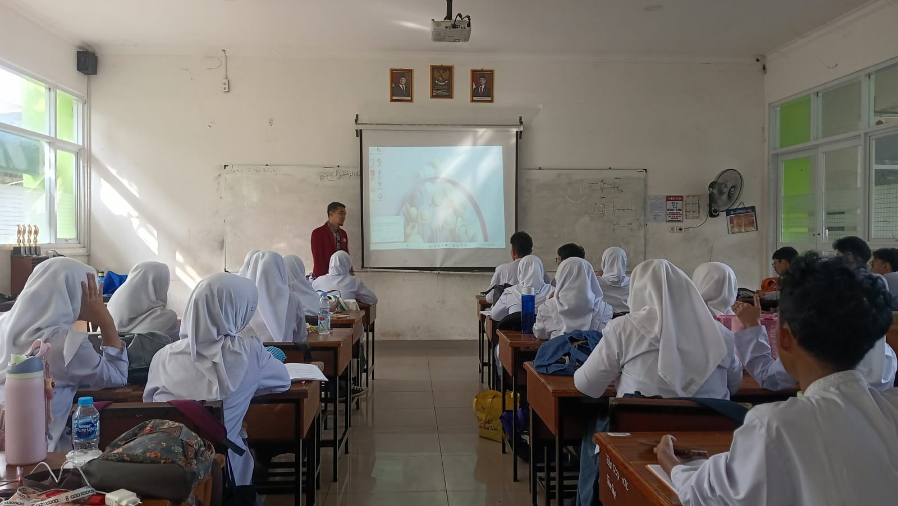
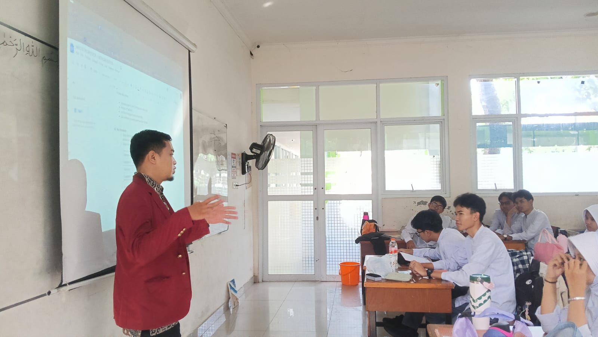
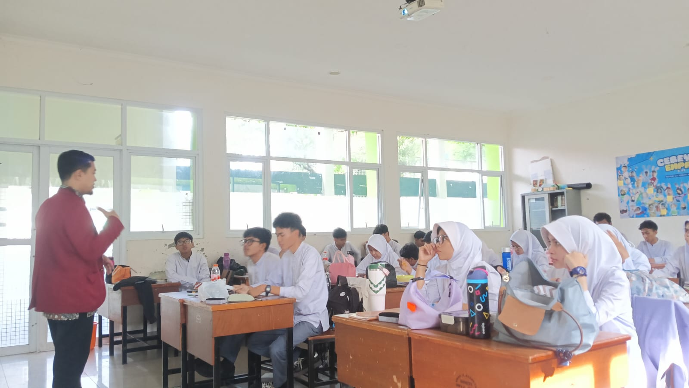

Analisis Pembelajaran: Siklus 2
Fokus Perbaikan
Pada siklus kedua ini, saya melakukan optimasi pada manajemen waktu melalui pembagian durasi yang ketat pada setiap fase Problem Based Learning. Selain itu, fokus utama adalah meningkatkan keberanian murid pasif dalam menyampaikan pendapat melalui teknik pertanyaan pancingan.
Dokumentasi Kegiatan



Hasil & Evaluasi
| Indikator | Analisis Hasil |
|---|---|
| Manajemen Waktu | Terstruktur dengan baik berkat durasi yang ketat di setiap fase pembelajaran. |
| Partisipasi Murid | Pertanyaan pancingan berhasil meningkatkan keberanian murid pasif, meski sebagian masih memerlukan dorongan. |
Transformasi Strategi (Siklus 3)
Berdasarkan refleksi dan umpan balik Guru Pamong, untuk siklus berikutnya saya akan melakukan pergeseran paradigma dari Problem Based Learning (PBL) menuju Project Based Learning (PjBL) berbasis game-based learning bertajuk "Menyelamatkan Borneo". Langkah ini diambil untuk menciptakan situated learning yang memaksa setiap individu mengambil peran aktif dalam penyelesaian proyek.